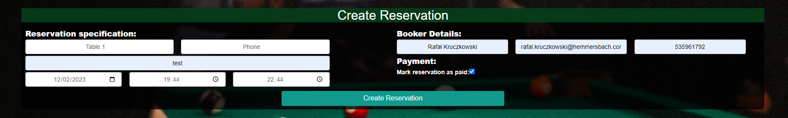
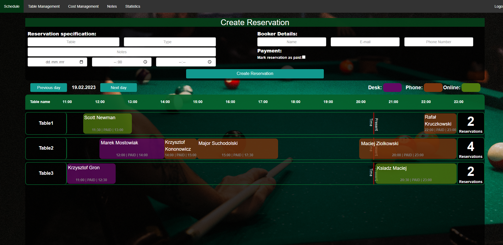

Zarządzanie rezerwacjami
Mając skonfigurowane stoły i koszty można przejść do najważniejszego elementu aplikacji jakim
jest tworzenie i zarządzanie rezerwacjami.
Rezerwacje dodajemy poprzez okno ‘Create Reservation’
w którym za pomocą listy wybieramy stół,
czas rezerwacji oraz uzupełniamy dane osoby rezerwującej. Rezerwacje dodajemy poprzez kliknięcie przycisku
‘Create Reservation’.
Dodana rezerwacja pojawi się w odpowiednim miejscu na harmonogramie.

Rys. 21 | Dodawanie rezerwacji
Harmonogram jest sercem system zarządzania rezerwacjami.
To tutaj mamy podgląd na to na jakim stole i o jakiej godzinie dana rezerwacja ma swoje miejsce.
Każdy wypełnieniony element harmonogramu to konkretna rezerwacja, zawiera ona także imię rezerwującego.
Aby przejść do podglądu szczegółowego rezerwacji nalezy kliknąć na jej pole,
zostaniemy wtedy przeniesieni na strone z detalami rezerwacji.

Rys. 22 | Widok zakładki rezerwacji
Mając uruchomiony podgląd rezerwacji możemy wyczytac wszystkie detale z nią związane oraz zmienić je uzywając przycisku ‘Edit’.
Po kliknięciu tego przycisku pola, które mogą zostać zmienione zmieniają kolor na szary.
Zmiany akceptujemy następnie przyciskiem ‘Save’
Aby usunąć rezerwacje klikamy przycisk delete. Rezerwacja zostanie wtedy usunięta.
Za pomocą przycisku ‘Mark as paid’. Możemy zmienić status rezerwacji jako opłacony
Przycisk ‘<’ odpowiada za powrocenie do glownego harmonogramu.
① oraz ② — przyciski odpowiadające za zmianę obecnie pokazywanego dnia , można uzyskać dostęp do poprzednich lub nadchodzących dni
③ — Stół do którego aktualnie są przypisywane rezerwacje , harmonogram zawiera listę takich stołów
④ — Jest to rezerwacja sama w sobie , umieszczona na harmonogramie w odpowiednim miejscu w zależności od długości oraz godziny rozpoczęcia i zakończenia..
⑤ — Imię rezerwującego
⑥ — Godzina rozpoczęcia
⑦ — Status – opłacona lub nie opłacona
⑧ — Godzina zakończenia
⑨ — Ilość rezerwacji na dany stół